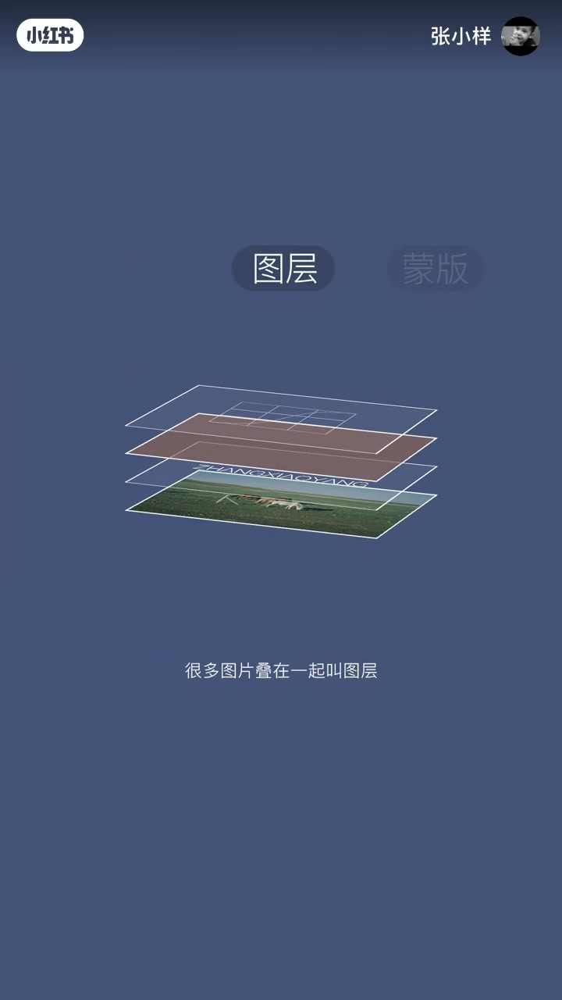
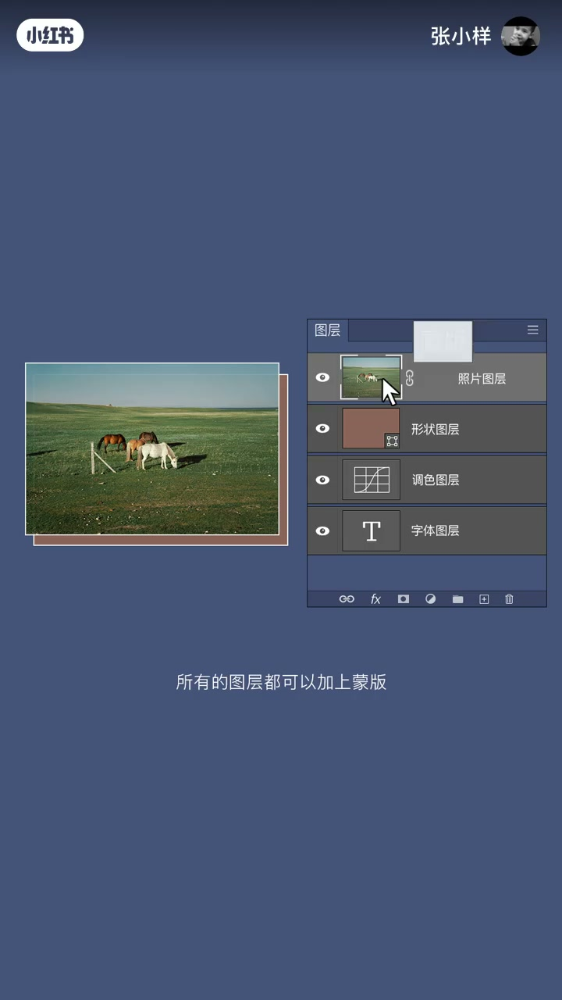
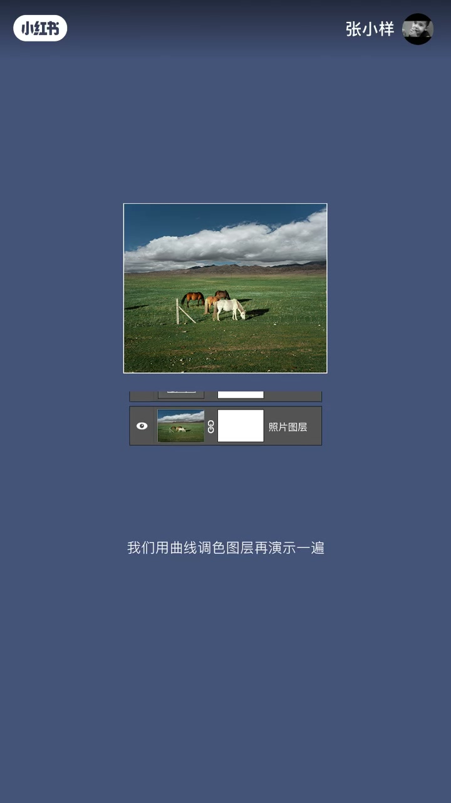
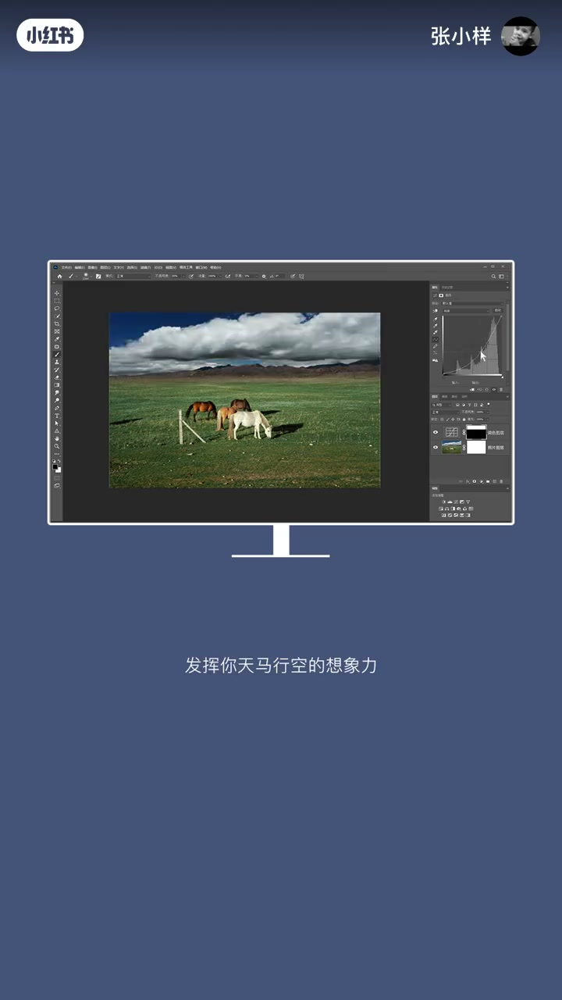

内容要点
一支 1 分钟 PS 入门课，用「楼层」类比讲清图层：很多房子叠在一起叫楼层，很多图片叠在一起叫图层。接着讲蒙版的唯一功能是隐藏图层局部区域，通过黑白画笔实现隐藏与还原；最后用曲线调色图层演示蒙版的实际用法，说明图层与蒙版在平面设计与局部调色中的价值。
知识结构
很多房子叠在一起叫楼层，很多图片叠在一起叫图层。图层类型包括照片、字体、形状、调色图层；移动图层顺序可调整显示内容，想让什么显示在前面就把它的图层放最上面。
所有图层都可以加蒙版，蒙版的功能只有一个——隐藏图层的局部区域。选中蒙版后，黑色画笔隐藏不想要的部分，白色画笔还原想保留的部分，两个画面拼凑形成新画面。
曲线往上提整个画面变亮；不想让某部分受影响，就在蒙版对应区域涂黑色。掌握后可用于海报合成、平面设计、摄影局部的调色。
图层 = 图片的堆叠顺序；蒙版 = 用黑白画笔控制图层的局部显示与隐藏。掌握这两点，就能组合出无限的新画面。
00:00-00:39图层与蒙版：两个核心概念
「什么是图层，什么是蒙板？」开场直接抛出问题，用一个生活化类比切入：「很多房子叠在一起叫楼层，很多图片叠在一起叫图层。」这个类比让抽象概念立刻变得可感。
接着介绍图层的类型——照片图层、字体图层、形状图层、调色图层，「可以通过移动图层的顺序来调整显示的内容，你想让什么物体显示在前面，就把它的图层放在最上面」。
然后讲蒙版：「所有的图层都可以加上蒙版，而蒙版的功能只有一个，就是用来隐藏图层的局部区域。」具体操作是选中蒙版后，黑色画笔隐藏不想要的部分，白色画笔还原想保留的部分，「这样的两个画面再次拼凑，就会形成新的画面」。


00:40-00:59曲线调色演示：蒙版限制影响范围
用曲线调色图层再做一遍演示：曲线往上提，整个画面变亮；如果不想让某个部分受提亮影响，就在蒙版里对应的部分涂黑色。「通过以上的概念，发挥你天马行空的想象力，做一些海报合成、平面设计，以及摄影局部的调色。」
收尾点明应用方向：这套概念是海报合成、平面设计和摄影局部调色的基础工具。


完整转录（24段）
以下文本由 Whisper medium 模型自动转录，可能存在少量识别误差，已尽可能修正。
什么是图层,什么是蒙板
很多房子叠在一起叫楼层
很多图片叠在一起叫图层
图层的类型有很多种
比如照片图层,字体图层,形状图层,调色图层
可以通过手背移动图层的顺序来调整显示的内容
你想让什么物体显示在前面
就把它的图层放在最上面
所有的图层都可以加上蒙板
而蒙板的功能只有一个
就是用来隐藏图层的局部区域
当你选中蒙板之后
通过黑色画笔可以隐藏你不想要的部分
白色画笔可以还原你想保留的部分
这样的两个画面再次拼凑
就会形成新的画面
我们用曲线调色图层再演示一遍
曲线往上提,整个画面会变亮
如果不想让某个部分飞出的影响
那么你可以在蒙板里对应的这部分通过黑色即可
通过以上的概念
发挥你天马行空的想象力
做一些海报合成,平面设计
以及摄影绘写的局部调色